Puedes acceder a este santuario tienes que completar la prueba heroica "A por los guardianes" en la región de la torre del lago. Para activarla debes dirigirte a la Playa de Sugob (al sur de la torre) y hablar con Lune.
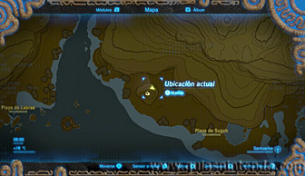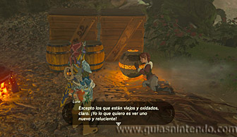
Ella tiene la esfera que necesitas para activar el pedestal que haga aparecer el santuario. Sin embargo, no se desprenderá de ella a menos que le enseñes fotos de guardianes. En este momento se activará la prueba heroica. Lo que tienes que hacer es conseguir una foto de tres tipos de guardianes, los normales que caminan (no vale si está destruido), los que vuelan y los miniguardianes pequeños que puedes encontrar en numerosos santuarios (en el santuario de Kaoma por ejemplo, en esta misma región).
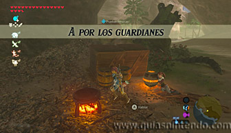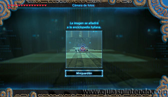
Para encontrar guardianes normales puedes ir a los alrededores del castillo de Hyrule en la región de la torre de la llanura. En el mismo castillo puedes encontrar a los voladores.
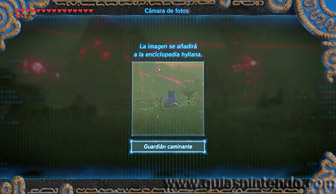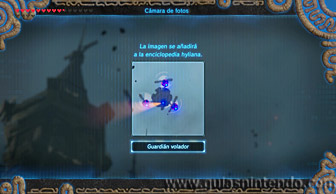
Una vez que tengas las fotos, habla de nuevo con Lune y se las enseñarás. Al hacerlo te dejará coger la esfera que debes llevar al pedestal que hay muy cerca de ella. Así conseguirás que la entrada al santuario aparezca.
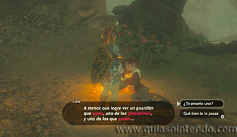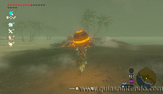
Una vez en su interior tendrás que derrotar a un miniguardián 2.0.
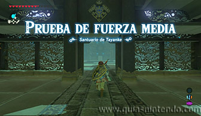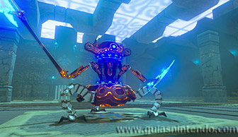
Ahora abre el cofre que está en las escaleras y conseguirás una Espada real, después continúa subiendo para alcanzar el altar del santuario y así obtener un símbolo de valía.
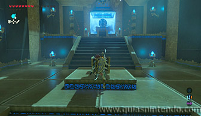